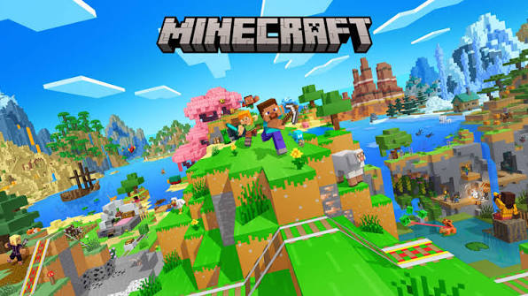

O Jogo minecraft, lançado em 17 de maio de 2009, é febre entre os jovens até hoje, tanto pelos gráficos simples, gameplay sandbox aberta, e o sentimento de aventura e evolução. Minecraft esse que existe á 17 anos, criado por Markus "Notch" Persson, desenvolvido pela Mojang e comprado pela Microsoft em 2014.
A primeira atualização grande do jogo minecraft que é realmente lembrada pelo players foi a "Adventure Time", a versão Beta 1.8, porém, várias outras atualizaçoẽs também são relembradas com carinho, como a 1.13, a atualização aquática e a 1.14, a atualização dos Villagers e Pillagers.
As melhores atualizaçoẽs do minecraft são:
